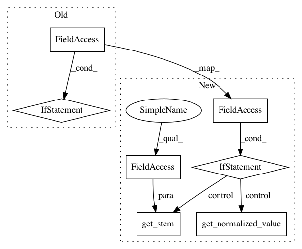

fef775c565e74cf5481ebcd92a291d8c155b07e9,snips_nlu/slot_filler/feature_factory.py,EntityMatchFactory,_transform,#EntityMatchFactory#Any#,396
Before Change
return self
def _transform(self, token):
return token.stem if self.use_stemming else token.normalized_value
def build_features(self):
features = []
for name, collection in iteritems(self.collections):
After Change
return self
def _transform(self, token):
if self.use_stemming:
return token.get_stem(self.language)
else:
return token.get_normalized_value()
def build_features(self):
features = []
for name, collection in iteritems(self.collections):
// We need to call this wrapper in order to properly capture
In pattern: SUPERPATTERN
Frequency: 3
Non-data size: 7
Instances
Project Name: snipsco/snips-nlu
Commit Name: fef775c565e74cf5481ebcd92a291d8c155b07e9
Time: 2018-07-10
Author: Adrien@MacBook-Pro-de-Adrien.local
File Name: snips_nlu/slot_filler/feature_factory.py
Class Name: EntityMatchFactory
Method Name: _transform
Project Name: snipsco/snips-nlu
Commit Name: fef775c565e74cf5481ebcd92a291d8c155b07e9
Time: 2018-07-10
Author: Adrien@MacBook-Pro-de-Adrien.local
File Name: snips_nlu/slot_filler/feature_factory.py
Class Name: NgramFactory
Method Name: compute_feature
Project Name: snipsco/snips-nlu
Commit Name: fef775c565e74cf5481ebcd92a291d8c155b07e9
Time: 2018-07-10
Author: Adrien@MacBook-Pro-de-Adrien.local
File Name: snips_nlu/slot_filler/feature_factory.py
Class Name: WordClusterFactory
Method Name: compute_feature